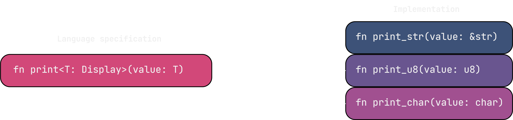

Generics and Monomorphization
Many languages offer generics, which provide a lot of convenience: There is no need to duplicate lots of code. While generics look similar in different language specifications, they might use different approaches for a specific implementation. In the case of Rust, generics go through a process called Monomorphization.
Monomorphization is the process of generating specialized versions of generic code for each concrete type used. So, whenever a concrete type is used to instantiate generic code, a new copy of all the code that uses the generic is created. For example, we have a function with a generic parameter T:
fn print<T: ToString>(value: T) {
println!("{}", value.to_string())
}
Now, we call the function with specific types. The compiler knows that it needs to create two instances of print for three different types: &str, u8, and i32.
pub fn main() {
print("abc" as &str);
print(123 as u8);
print('A' as char);
}
In this case, the compiler creates three copies of the function like this:
$~$

Monomorphization has different consequences. The most important benefit of this implementation is that the exact type of every function is statically known and the compiler can use all its optimizations to improve the runtime performance of the code. There is also no distinction on which function needs to be called, as every call for a specific type gets a call to its own instance of the function. So, no additional runtime checks are needed.
However, there are also some drawbacks. Copying the code will result in a bigger binary. Depending on the size of the function and the number of invocations with different types, this can cause the binary size to explode. The copying step will also increase the compile time. Further, cache efficiency will suffer as there is not one function anymore but many that are potentially also scattered in memory. Lastly, this approach requires that all users of the generic type are known at compile time. This is a problem e.g., if generic code is supposed to be exported from a shared library. The user of the shared library might now want to use the generic with a type where no instance exists. That's why generics in exported functions are generally not supported.
Different crates also create their own instances of generics. That means crate A and crate B can both instantiate a Vec<String> which would create two copies even though the type is the same. This problem was partially solved with the introduction of shared generics where monomorphized code can be shared between crates.
$~$
| Con | Pro |
|---|---|
| Binary size | Compiler optimizations |
| Compile time | No dynamic dispatch |
| Cache efficiency | |
| Cannot be exported |
Pros and cons
As with most optimizations, it’s mostly a tradeoff between memory size and runtime performance.
Trick
Monomorphization can drastically increase the size of the binary. But, most of the impact can be avoided by redesigning the generic code to separate the code that handles the generic part and the rest of the code that deals with ordinary data types. This trick can be seen inside the standard library as well. For example in std::path::with_extension():
pub fn with_extension<S: AsRef<OsStr>>(&self, extension: S) -> PathBuf {
self._with_extension(extension.as_ref())
}
fn _with_extension(&self, extension: &OsStr) -> PathBuf {
// complex function ...
}
The generic code is encapsulated in with_extension() and gets resolved into a concrete data type. This type can be used to call the complex part of the function that resides inside another function. In this case, the compiler can only use monomorphization for with_extension() and does not need to copy _with_extension. However, the compiler may choose to inline functions which could revert the effects of separating generic and non-generic code. Therefore, #[inline(never)] can help to tell the compiler to not inline a function.
Tracking
It might be useful to track how many copies of a function exist. A useful tool for this is for example llvm-lines which allows to see the number of copies, as well as their size. Using the example of the generic print function we can see the three copies created, one for each argument.
▶ cargo llvm-lines --release
Lines Copies Function name
----- ------ -------------
2026 54 (TOTAL)
303 (15.0%, 15.0%) 1 (1.9%, 1.9%) alloc::raw_vec::RawVecInner<A>::grow_amortized
282 (13.9%, 28.9%) 1 (1.9%, 3.7%) alloc::alloc::Global::grow_impl
158 (7.8%, 36.7%) 1 (1.9%, 5.6%) alloc::raw_vec::RawVecInner<A>::try_allocate_in
143 (7.1%, 43.7%) 3 (5.6%, 11.1%) monomorphization::print
...